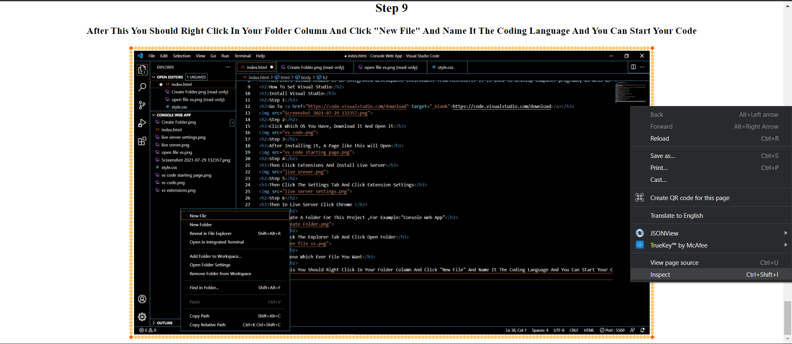
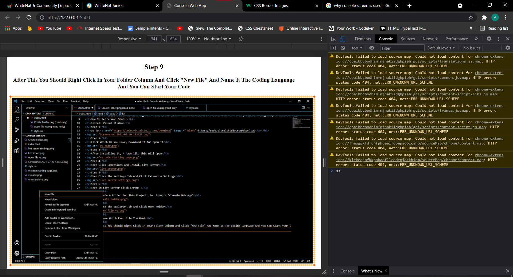

Project On Console
Microsoft Visual Studio is an integrated development environment from Microsoft. It is used to develop computer programs, as well as websites, web apps, web services and mobile apps.
How To Set Visual Studio
Install Visual Studio
Step 1

Step 2
Click Which OS You Have, Download It And Open It

Step 3
After Installing It, A Page like this will Open

Step 4
Then Click Extensions And Install Live Server

Step 5
Then Click The Settings Tab And Click Extension Settings

Step 6
Then In Live Server Click Chrome
Step 7
Then Create A Folder For This Project ,For Example:"Console Web App"

Step 8
Then Click The Explorer Tab And Click Open Folder

Step 9
Then Choose Which Ever File You Want, For Example "Console Web App"

Step 9
After This You Should Right Click In Your Folder Column And Click "New File" And Name It The Coding Language And You Can Start Your Code

Console Screen
A screen buffer is a two-dimensional array of character and color data for output in a console window. A console can have multiple screen buffers. The active screen buffer is the one that is displayed on the screen. The system creates a screen buffer whenever it creates a new console
Here Are The Steps To Open Console Screen :
First Right Click The Page You Want To See The Console Screen And Click Inspect

Then Click Console

You Can Display Anything On The Console Screen By Using "console.log(any text you want)" In Javascript